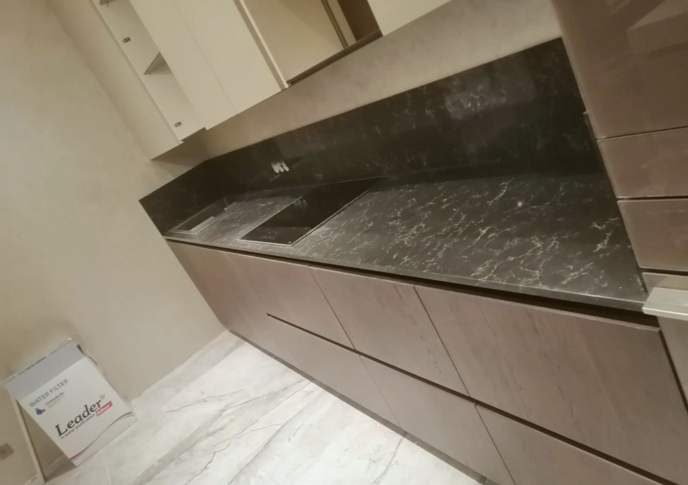
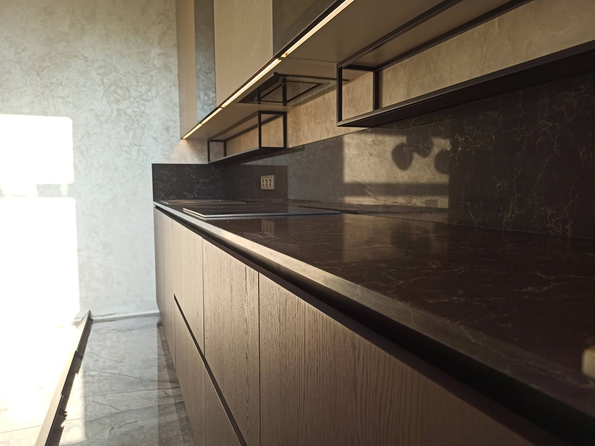
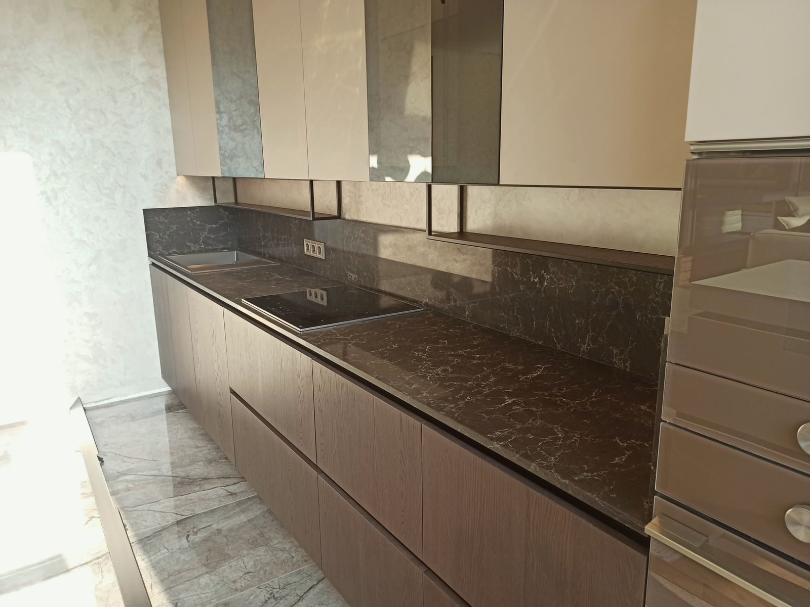
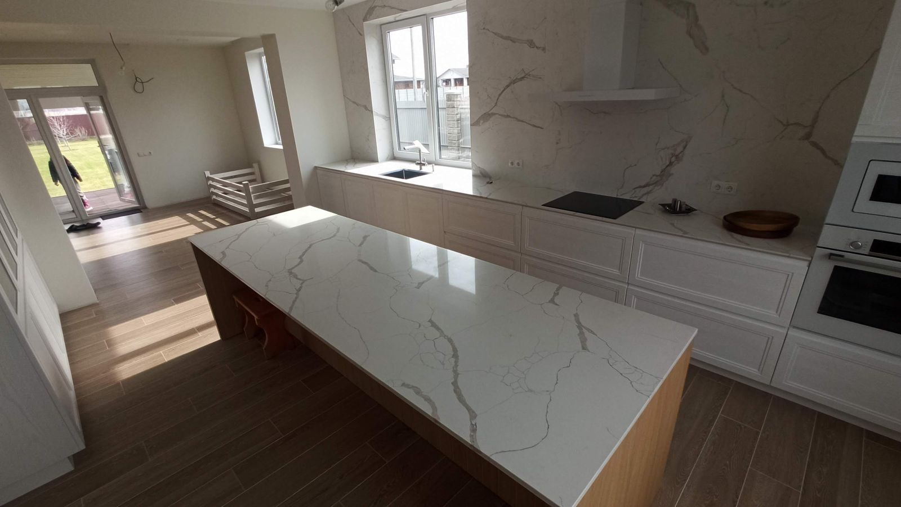

Стільниціз мармуру
Плити, відібрані в Новельді, столиці мармуру. Кожна стільниця унікальна.
від 290 €/м²

Мармурова стільниця не схожа на жодну іншу: малюнок прожилок, колір і глибина змінюються в кожному блоці. У Новельді ми працюємо в оточенні кар'єрів та складів мармуру, тому ми допоможемо вам вибрати плиту та підібрати малюнок прожилок на стиках деталей. Мармур м'якший і пористіший за кварц, тому ми покриваємо його герметиком під час монтажу та рекомендуємо матове покриття, якщо ви хочете, щоб сліди використання були менш помітними. Ми виготовляємо стільниці для кухонь, ванних кімнат, кухонних островів та столів.
Чому ми
- 01
Безперервний малюнок
Ми підбираємо малюнок прожилок між стільницею, фартухом та островом.
- 02
З Новельди
Прямий доступ до плит з іспанського та імпортного мармуру.
- 03
Обробка на вибір
Полірована для блиску, матова або шліфована для щоденного використання.
- 04
Чесна порада
Ми пояснимо, де варто використовувати мармур, а де ні.
Технічні деталі
Що вартознати
Орієнтовні ціни без ПДВ (IVA). Кінцева ціна залежить від матеріалу, розмірів та монтажу.
- Товщина
- 20 · 30 мм
- Обробка
- полірована, шліфована, під старовину (антік)
- Обробка поверхні
- водовідштовхувальне та брудовідштовхувальне просочення
- Підбір прожилок
- метеликом (дзеркальний) або безперервний
- Мармур
- білий, кремовий, сірий, зелений, чорний
Наші роботи
З майстернідо вашої оселі



Як ми працюємо
Чотири кроки,один відповідальний
- 01
Заміри
Виконуємо заміри у вас вдома за допомогою лазера або шаблону.
- 02
Проєктування
Створюємо технічне креслення та разом із вами обираємо плиту.
- 03
Виготовлення
Порізка, обробка на ЧПУ та полірування у нашій майстерні в Новельді.
- 04
Монтаж
Наша бригада встановлює виріб, герметизує шви та прибирає за собою.
Часті питання
Частіпитання
Чи є мармур гарною ідеєю для кухні?
Так, якщо ви готові до того, що він з часом змінюється: лимон або вино можуть залишити сліди. З матовою поверхнею та якісним захисним просоченням сліди зносу будуть набагато менш помітними.
Що таке підбір малюнка «метеликом» (дзеркальний)?
Укладання двох послідовних плит з одного блоку дзеркально, щоб прожилки утворювали симетричний малюнок.
Чи працюєте ви з мармуром, який я куплю самостійно?
Так, ми розпилюємо та встановлюємо плити, які ви надасте. Перед початком робіт ми обов'язково перевіряємо їхній стан.
Контакти
Отримайтерозрахунок вартості
- WhatsApp+34 652 69 20 97
- Телефон+34 652 69 20 97
- МайстерняL'Estació de Novelda, 03660 Novelda, AlicanteАліканте, Ельче, Новельда, Бенідорм, Торрев'єха, Хавеа та вся Коста-Бланка